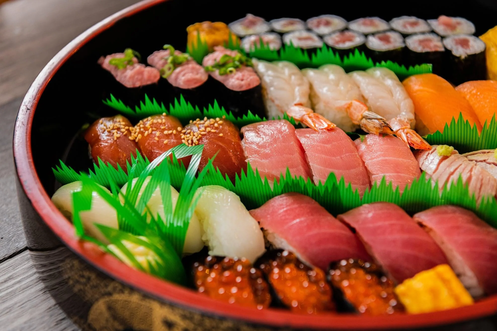

Sashimi – The Pure Taste of the Sea
Sashimi celebrates simplicity and freshness. With no rice involved, the focus remains entirely on the quality of the seafood and the precision of the cut.
This elegant dish highlights Japan’s deep respect for ingredients, where texture, flavor, and presentation come together in their purest form.
The Importance of Freshness
Fresh, sushi-grade seafood is the foundation of great sashimi. Popular choices include salmon, tuna, yellowtail, scallops, and octopus.
The cleaner the flavor, the more refined and enjoyable the sashimi experience becomes.
Precision Cutting Techniques
Sashimi preparation requires exceptional knife skills. Fish is sliced against the grain using long, smooth strokes.
Each cut is designed to enhance tenderness while preserving the ingredient’s natural structure.

Artful Presentation
Presentation is central to sashimi culture. Slices are arranged carefully to reflect balance, color harmony, and visual elegance.
Garnishes such as shredded daikon radish, shiso leaves, and edible flowers enhance both beauty and freshness.
Traditional Accompaniments
Sashimi is typically served with soy sauce and wasabi. The soy adds saltiness, while wasabi provides a sharp, aromatic heat.
Pickled ginger may also be included to cleanse the palate between bites.
Popular Sashimi Varieties
- Salmon (Sake)
- Tuna (Maguro)
- Yellowtail (Hamachi)
- Squid (Ika)
- Scallop (Hotate)
Serving Tips
Always serve sashimi chilled on a clean platter. Use a sharp knife and slice just before serving for maximum freshness.
Pairing with green tea or light sake enhances the refined dining experience.
Elegance in Its Purest Form
Sashimi is more than a dish—it’s a reflection of Japanese culinary philosophy, where quality and simplicity take center stage.
With pristine seafood and precise craftsmanship, sashimi offers a pure taste of the sea that is both timeless and unforgettable.